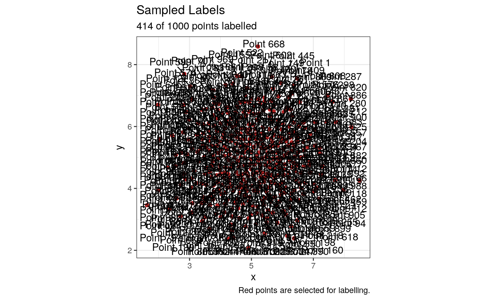

An issue with labelling points on dense plots (e.g., volcano plots) is that high point density prevents clear labelling, even with tools like `ggrepel`. This function addresses this by retaining isolated points while sampling from points in higher-density regions. It takes a dataframe with Cartesian coordinates and returns a logical vector identifying which points to select for labelling. The result is a less cluttered plot where labels are present even in crowded areas, providing a better representation of the underlying data.
Usage
sample_labels_by_isolation(
df,
x_col,
y_col,
r,
k_priority = 30,
scale = TRUE,
k_search = 30,
k_for_r = 5
)Arguments
- df
A dataframe containing the point coordinates.
- x_col
A character string with the name of the column containing x-coordinates.
- y_col
A character string with the name of the column containing y-coordinates.
- r
The exclusion radius. This can be a positive numeric value or the string "auto". If "auto", the radius is calculated as the median distance to the `k_for_r`-th nearest neighbour across all points. A smaller `r` will result in more points being kept. Note: The interpretation of `r` depends on whether `scale` is `TRUE`.
- k_priority
An integer for calculating the isolation priority score. Must be less than or equal to `k_search`. Default: 50.
- scale
A logical value. If `TRUE`, the coordinate data is centred and scaled (using `scale(center=TRUE, scale=TRUE)`) before distance calculations. Defaults: `TRUE`.
- k_search
The maximum number of neighbours to find in the initial KNN search. This value must be greater than or equal to both `k` and `k_for_r`.
- k_for_r
An integer specifying which neighbour to use for the 'auto' `r` calculation. Default: 5.
Value
A logical vector of length `nrow(df)`. `TRUE` indicates the point at that index should be kept for labelling.
Details
Algorithm in detail: 1. If `scale = TRUE`, the coordinate data is centred and scaled. 2. An approximate k-nearest neighbour (KNN) search for all points is conducted using the HNSW algorithm. 3. A priority score is calculated for each point, defined as the median distance to its `k` nearest neighbours, where higher scores signify greater isolation. 4. The function iterates through the sorted list of points in descending order: a. If a point has not yet been processed, it is marked to be 'kept'. b. All neighbours of this point within the specified exclusion radius `r` are then marked as 'processed' and will be ignored in subsequent iterations. 5. A logical vector is returned, where `TRUE` corresponds to a point that should be kept for labelling.
Examples
library(ggplot2)
library(ggrepel)
# Generate sample data with a dense cluster
set.seed(42)
n_points <- 1000
cluster_data <- data.frame(
x = rnorm(n_points, mean = 5, sd = 1),
y = rnorm(n_points, mean = 5, sd = 1),
label = paste("Point", 1:n_points)
)
# Use the function to get a logical vector for filtering
kept_labels <- sample_labels_by_isolation(
df = cluster_data,
x_col = "x",
y_col = "y",
scale = FALSE,
r = "auto",
k = 5,
k_search = 100,
k_for_r = 10
)
#> Label sampling: 'k_for_r' was too large, is set to 'k'.
#> Label sampling: auto-calculated radius 'r' (median distance to 5-th nearest neighbour): 0.127
# Create the label dataframe for ggplot
label_df <- cluster_data[kept_labels, ]
# Plot the results
ggplot(cluster_data, aes(x = x, y = y)) +
geom_point(colour = "grey70", alpha = 0.7) +
geom_point(data = label_df, colour = "firebrick") +
geom_text_repel(
data = label_df,
aes(label = label),
min.segment.length = 0,
box.padding = 0.25,
max.overlaps = Inf
) +
coord_fixed() +
labs(
title = "Sampled Labels",
subtitle = paste(sum(kept_labels), "of", nrow(cluster_data), "points labelled"),
caption = "Red points are selected for labelling."
) +
theme_bw()
